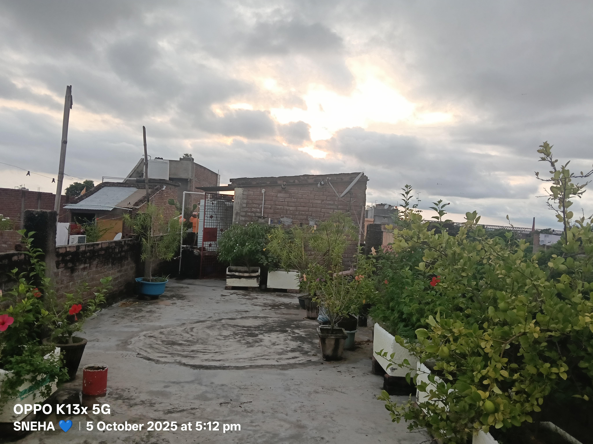
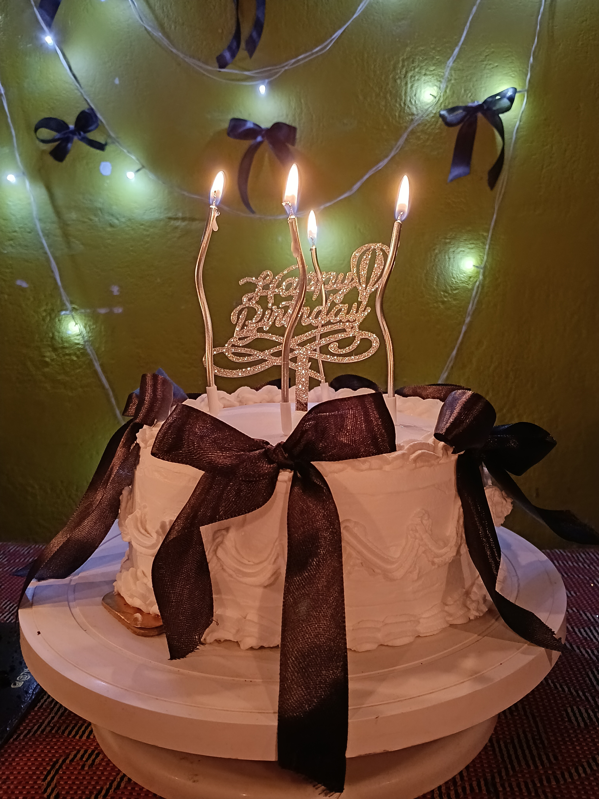
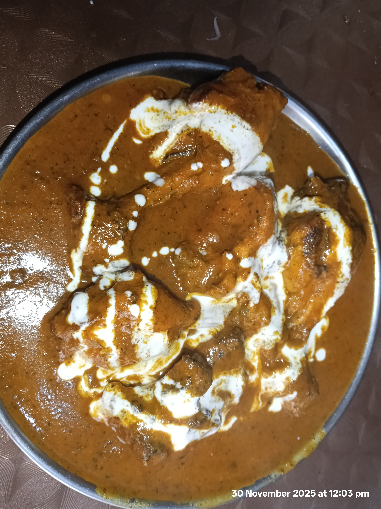

Hii I'm Sneha , an undergraduate B.Tech student at Government Enginnering College Munger.
I am Currently in my second semester and pursuing Computer Science with a specilization in Aritifical Intelligence.
My goal is to improve consistently and perform better than first sem. Although my first sem was average, tried but i failed.
I am focused on learning from my mistakes and growing stronger.
Programming languages:
Python
C
CSS
HTML
C++
Daily Routine:
Wake up - 8:00 Am
Breakfast - 9:30 Am
College - 9:00 Am to 5:00 Pm
Sleep - 10:00 Am
Current status of my Tech Journey:
Python Fundamentals-
Currently strengthening core concepts like strings, lists, loops, and problem-solving logic.
Web Development-
Learning basic HTML structure and building simple web pages.
Version Control-
Practicing Git and GitHub to manage and track project changes.
Problem-Solving-
Improving logical thinking by solving coding problems regularly.
Career Direction-
Focused on becoming an AI-oriented engineer by building strong foundations step by step.
About my hobbies:
Gardening: I enjoy spending time with plants and nature. I feel very relaxed with them. It helps me stay calm and patient. Here is a clip:-

Cooking: I like trying new recipes and improving my cooking skills. These are some pics of my Cravings -


Music: Listening to music helps me relax. Music gives rhythm to my routine each day.It clears my thoughts and stress away. The is one of my favorite song and you should listen to it:-
Learning Technology: I enjoy exploring AI and programming concepts. I explore new tools and ideas every day, Building skills step by step along the way.
From coding basics to AI concepts deep, I learn, apply, improve — no shortcuts I keep.
Photography: I like capturing creative and natural moments. Here is a clip :-